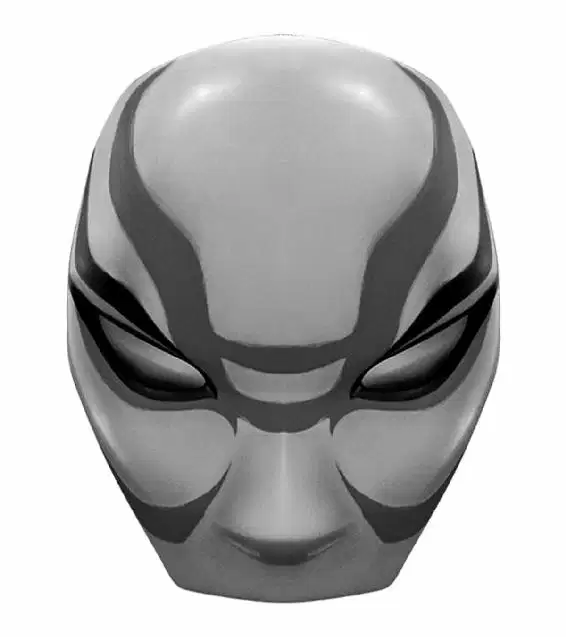

Hiro led Baymax back to the old warehouse that had been filled with barrels of microbots, never noticing that a car was following them every step of the way.
He walked up to the warehouse door, but this time it didn’t matter whether it was locked. He pointed to the door and Baymax smashed it.
Hiro peeked into the dark warehouse carefully from behind his robot and said, “Get him, Baymax!”
But the warehouse was empty. Hiro was puzzled. “We’re too late,” he said. He took the petri dish out of his hoodie and watched it. The microbot was vibrating very softly in one direction.
“Your tiny robot is trying to go somewhere,” Baymax said.
Hiro turned and walked in the direction the microbot was leading. He headed out the door and down the street. The vibration grew stronger. He smiled. Maybe they weren’t too late after all!
He stared down at the petri dish, following the movements of the microbot as if it were a compass. The vibrations were getting stronger with every step he took. Now he knew they were going in the right direction. He was ready to start running when he was yanked from behind by his hoodie. He fell backward and turned to see Baymax.
“Always wait one hour after eating before swimming,” Baymax cautioned.
“What?” Hiro said, then looked down and saw that his next step was going to be right into the San Fransokyo Bay! He hadn’t realized he’d been walking on a pier for the last few minutes.
Hiro stared out at the cold, dark water. A layer of fog was floating above the bay. He looked at the petri dish again. The microbot was still tapping in the direction of the water, but Hiro didn’t see anything out there.
Suddenly, the microbot tapped so hard, the top of the petri dish flew off. Hiro watched the bot disappear into the fog. Then he heard an ominous buzz, soft at first, but gradually getting louder. Slowly a shape emerged. It was the man in the white-and-red Kabuki mask!
Hiro quickly grabbed Baymax and they hid behind a shipping container. He peeked out to see the masked man being transported across the water on a platform—made of a million microbots!
They also seemed to be carrying a strange metal piece. Hiro narrowed his eyes, making out a faint image etched on its side. It looked like an imprint of a bird.
“Your heart rate has increased dramatically,” said Baymax.
“Shhh. Okay, Baymax?” Hiro whispered, wanting to stay hidden. “Time to use those upgrades.”
Just then, a car came screeching down the street. It drove straight at them! Pressed flat against the container, Hiro and Baymax froze. But they were caught in the headlights.
